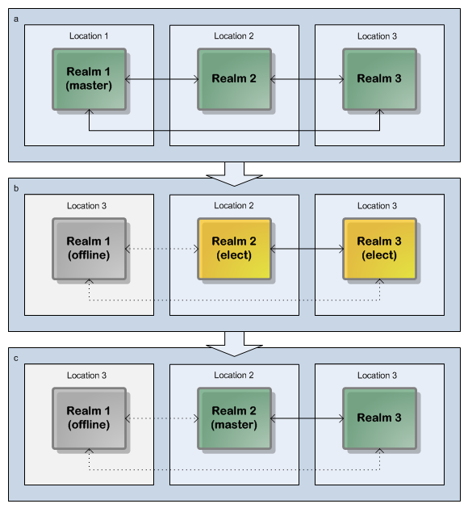
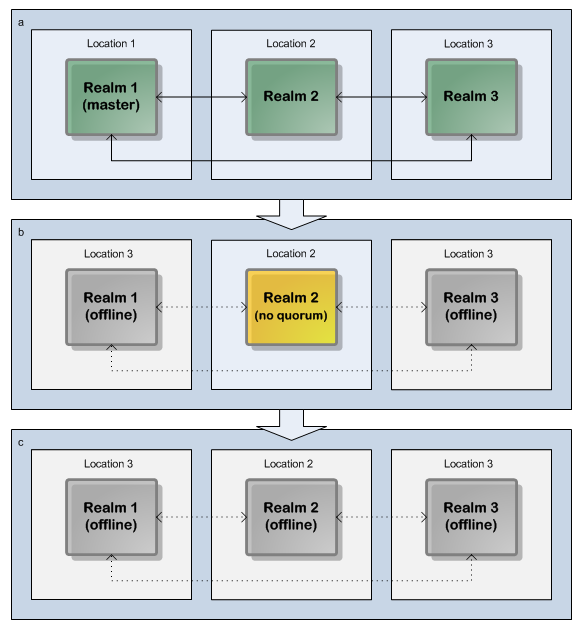
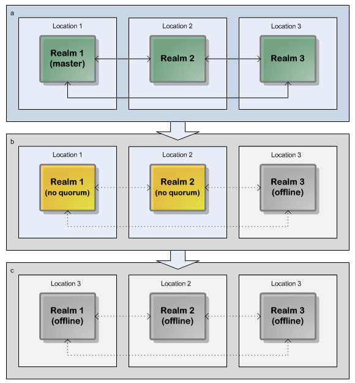

Election of a new Master
A master realm may unexpectedly exit or go offline owing to power or network failure. In this event, if the remaining cluster nodes achieve 51% or greater quorum (see
Quorum, they will elect a new master realm between them and continue to function as a cluster.
The process of the master election involves all remaining realms in the cluster. Each remaining realm submits a vote across the cluster that results in the new master once all votes are received and the number of votes is greater than or equal to 51% of the total cluster members.
Example: Master Election in a Three-Realm Cluster
In this example, we examine a three-realm cluster, distributed across three physical locations (such as a primary location and two disaster recovery locations). The master realm has failed, but the reaming two realms achieve a quorum of 67% (which satisfies the 51% quorum minimum requirement), so will elect a new master and continue operating as a cluster:
Three-realm cluster over three locations: quorum permits election of a new Master and cluster continuation.
Note: Dotted lines represent interrupted communication owing to server or network outages.
Examples: Insufficient Quorum for Master Election
In this example, we again examine a three-realm cluster, distributed across three physical locations. In this case, both the master realm and one slave realm have failed, so the remaining realm represents only 33% of the cluster members (which does not satisfy the 51% quorum minimum requirement). As a result, it cannot elect a new master, but will instead disconnect its clients and attempt to re-establish communications with the other realms with the aim of reforming the cluster:
Three-realm cluster over three locations: insufficient quorum prevents election of a new Master or cluster continuation.
Note: Dotted lines represent interrupted communication owing to server or network outages.
A second example highlights both a realm's perspective of quorum, and prevention of split-brain (multiple masters) configurations. In this example, one realm server has failed, while two realms are still active. Also, in this particular example, we assume network connectivity between all realms has failed. As far as each active realm is concerned, therefore, it is the only functioning realm, representing only 33% of the cluster members. As you might expect, this is insufficient for the 51% required quorum, and is thus also insufficient for the continued operation of the cluster. Both "active" realms will disconnect their clients and attempt to re-establish communications with the other realms, with the aim of achieving quorum and reforming the cluster:
 Three-realm cluster over three locations: lack of network interconnectivity prevents cluster continuation.
Note: Dotted lines represent interrupted communication owing to server or network outages.
Note that in the above example, although the two active realms were unable to communicate with each other, it is possible that they were able to communicate with clients. Here, the importance of the 51% quorum rule can be clearly seen: without it, both realms would have elected themselves master, which could have led to logically unresolvable conflicts once the cluster was reformed. It is therefore essential that the cluster was disabled until such time as a 51% quorum could be achieved.
Clearly, for the situation where we have a total cluster failure, i.e. all realms or locations are offline, the cluster is also deemed inaccessible.